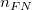
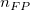
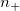
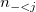
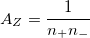
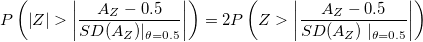
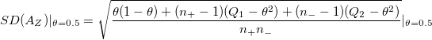
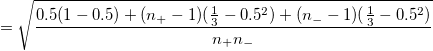

/math-d2583020b138319a535bc3c88278ab33.png "x_i\,\!") : Testergebnis Score für Fall
: Testergebnis Score für FallIn diesen Teil werden die folgenden Schreibweisen verwendet.
: Testergebnis Score für Fall
/math-d750fff2ef5c4d25bcff29719305177a.png "n_{TP}\,\!") : Anzahl der wahren positiven Entscheidungen
: Anzahl der wahren positiven Entscheidungen
: Anzahl der falschen negativen Entscheidungen
/math-12495e96208687e2494a1d6350363ce4.png "n_{TN}\,\!") : Anzahl der wahren negativen Entscheidungen
: Anzahl der wahren negativen Entscheidungen
: Anzahl der falschen positiven Entscheidungen
/math-a3b41b80fce655f49856414c7f15b33e.png "n_{-}\,\!") : Anzahl der Fälle mit negativem tatsächlichen Zustand
: Anzahl der Fälle mit negativem tatsächlichen Zustand
: Anzahl der Fälle mit positivem tatsächlichen Zustand
: Anzahl der wahren negativen Fälle mit Testergebnissen, die gleich sind mit
: : Anzahl der wahren positiven Fälle mit Testergebnissen größer als
: : Anzahl der wahren positiven Fälle mit Testergebnissen, die gleich sind mit
: : Anzahl der wahren negativen Fälle mit Testergebnissen kleiner als
1- Spezifizität (X):
Sensitivität (Y): /math-0760bde0cf79e5793835075ee3d2bcdd.png "\frac{n_{TP}}{n_{TP}+n_{FN}}\,\!")
Angenommen, /math-6373accf16c083723e8abae2f5401af2.png "x\,\!") ist die Skalierung der Testergebnisvariable. Bezeichnen Sie
ist die Skalierung der Testergebnisvariable. Bezeichnen Sie /math-2d4dd525bc7143c51992574674cba150.png "x_{-}\,\!") mit den Werten für Fälle mit negativem tatsächlichen Zustand und mit den Werten
mit den Werten für Fälle mit negativem tatsächlichen Zustand und mit den Werten /math-2c52673b83cb8d0bac1cb71c716fb95b.png "x_{+}\,\!") für Fälle mit positivem tatsächlichen Zustand. Die nichtparametrische Approximation der "wahren” Fläche unter der ROC-Kurve
für Fälle mit positivem tatsächlichen Zustand. Die nichtparametrische Approximation der "wahren” Fläche unter der ROC-Kurve /math-0a5000fe8b6b5570dd5a1ce00b828ef6.png "\theta \,\!") ist
ist
/math-569223521931231c409785c91f0084b2.png "\sum_{j=1}^{n_{-}}\sum _{i=1}^{n_{+}}\Psi (x_{+},x_{-})")
wobei der Stichprobenumfang von /math-a7c6c783c5d03fc91d0594b217f56580.png "D\,\!") + ist, der Stichprobenumfang von - ist und
+ ist, der Stichprobenumfang von - ist und
/math-0889c138e945599aafd7573b2404ee0e.png "\Psi (x_{+},x_{-})=\,\!")
Beachten Sie, dass /math-695617aa4d2b4e1c93f4ffa59c529d83.png "A_z\,\!") der beobachtete Bereich unter der ROC-Kurve ist, der aufeinander folgende Punte mit einer geraden Linie verbindet. d.h. durch die Trapezregel.
der beobachtete Bereich unter der ROC-Kurve ist, der aufeinander folgende Punte mit einer geraden Linie verbindet. d.h. durch die Trapezregel.
Eine alternative Berechnungsmöglichkeit für ist folgende:
/math-1ea8d817ad6b5f332af7ec49c30dc22d.png "A_Z=\frac 1{n_{+}+n_{-}}\sum \left\{ n_{-=j}n_{+>j}+\frac{n_{-=j}n_{+=j}}2\right\}")
Die Standardabweichung von wird geschätzt mit:
/math-fde8eb47f42d8792fdc2e76131a46863.png "SE(A_Z)=\sqrt{\frac{A_Z(1-A_Z)+(n_{+}-1)(Q_1-A_Z^2)+(n_{-}-1)(Q_2-A_Z^2)}{n_{+}n_{-}}} \,\!")
wobei
![Q_{1=\frac 1{n_{-}n_{+}^2}}\sum n\__{=j}[n_{+>j}^2+n_{+>j}n_{+=j}+\frac{n_{+>j}^2}3] \,\!](../images/Algorithm_(ROCCurve)/math-99adafc3fccb24a1cf7264ad44e4e60a.png "Q_{1=\frac 1{n_{-}n_{+}^2}}\sum n\__{=j}[n_{+>j}^2+n_{+>j}n_{+=j}+\frac{n_{+>j}^2}3] \,\!")
und
Ein 2-seitiges asymptotisches Konfidenzintervall für den wahren Bereich unter der ROC-Kurve ist
/math-da8f6f3f8ae6e03c2be19875f1fb8083.png "\theta=0,5\ \,\!") , vs. die Alternativhypothese, dass
, vs. die Alternativhypothese, dass /math-8d97b516153b32dc87de1d6354170e6f.png "\theta \neq 0,5\ \,\!")
Da asymptotisch normal unter der Nullhypothese ist, dass , können wir den asymptotischen P-Wert unter der Nullhypothese berechnen, dass vs. die Alternativhypothese, dass

Im nichtparametrischen Fall


Der Grenzpunktwert wird durch die Gleichheitsmaximierung dieser zwei Größen (SpEqualSe) definiert. Das ist min( abs(1-x-y) ) für die ROC-Kurve.